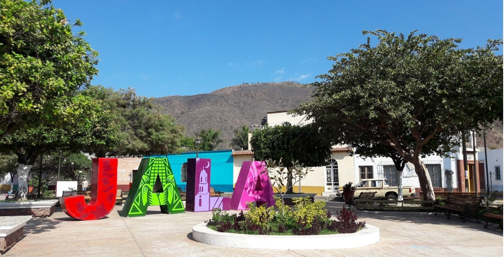
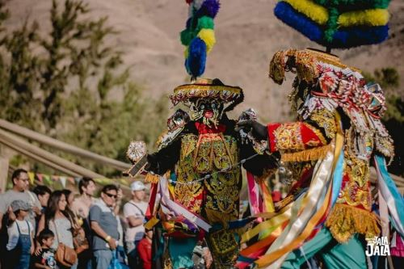
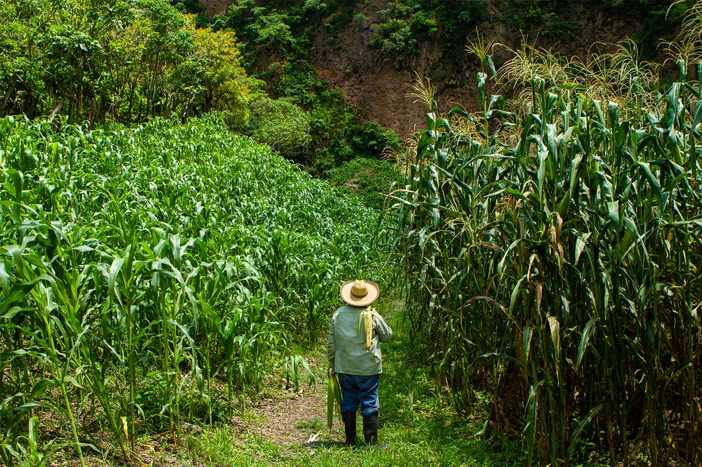

Jala es un municipio situado en la zona norte de Nayarit, Mexico. Limita al norte con el municipio de Santa Maria del Oro, al sur con el municipio de Ahuacatlan, al este con el municipio de Ixtlan del Rio, y al oeste con el municipio de Jalisco.
La fiesta mas importante de Jala es la celebracion en honor a la Virgen de los Remedios, que tiene lugar cada año en septiembre, con procesiones, musica, danzas y comida tipica.
La agricultura es la principal actividad economica de Jala, destacando la produccion de maiz, frijol, caña de azucar y frutas como la guanabana y el mango. Tambien se dedica a la ganaderia y la produccion de miel.
